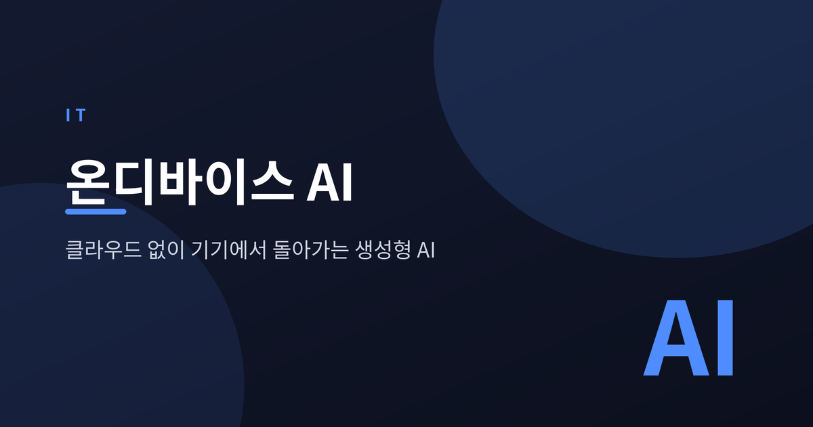
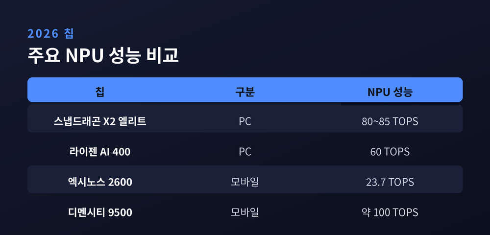
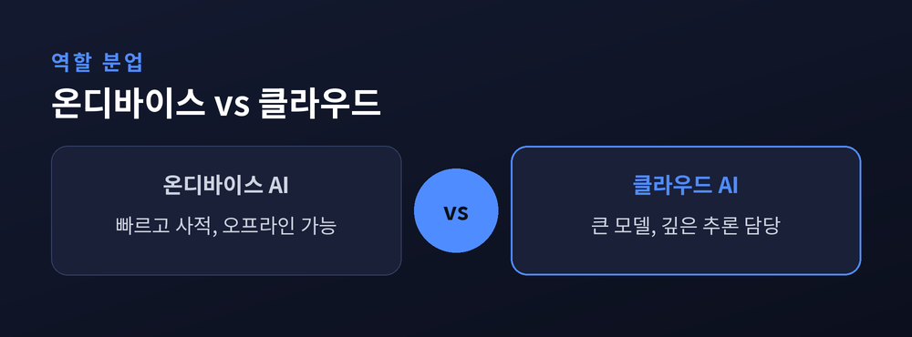
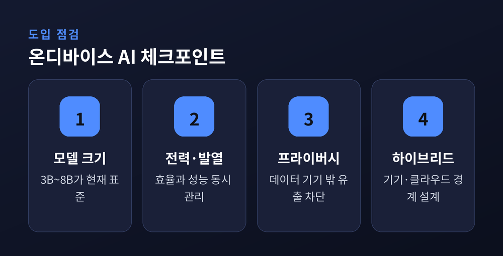

클라우드 없이 기기에서 돌아가는 생성형 AI

생성형 AI가 서버를 떠나 손안의 기기로 내려오고 있습니다. 2026년의 화두는 클라우드 없이 기기에서 직접 돌아가는 온디바이스 AI입니다. 이 글은 그 중심에 있는 NPU가 무엇이고, 무엇이 좋아졌으며, 어디까지가 한계인지 짚어봅니다.
NPU는 신경망 연산에 특화된 반도체입니다. Neural Processing Unit의 약자로, AI 모델의 행렬 연산을 CPU나 GPU보다 적은 전력으로 빠르게 처리합니다.
성능은 흔히 TOPS(초당 조 단위 연산)로 표기합니다. 숫자가 클수록 더 무거운 모델을 더 빠르게 돌린다는 뜻입니다.
예전엔 AI라고 하면 자연스레 데이터센터를 떠올렸습니다. 지금은 스마트폰 칩 안에 AI 엔진이 기본으로 들어갑니다. 그 변화의 엔진이 바로 NPU입니다.
모바일에서는 퀄컴 스냅드래곤 8 엘리트 젠5가 NPU 성능을 전 세대 대비 크게 끌어올렸습니다. 삼성 엑시노스 2600의 NPU는 23.7 TOPS로 전작 대비 약 4.3배 향상됐고, 집중적인 AI 작업 시 소비 전력은 1.2와트 수준으로 알려졌습니다. 미디어텍 디멘시티 9500의 NPU는 약 100 TOPS에 근접하며 생성형 AI에 최적화됐습니다.
애플은 뉴럴 엔진의 TOPS 수치를 공개하지 않습니다. 대신 온디바이스 생성형 AI 기능을 묶은 애플 인텔리전스를 아이폰·아이패드·맥에 내장했습니다.
PC 쪽에서는 마이크로소프트가 코파일럿+ PC 기준을 세웠습니다. NPU 40 TOPS 이상, 램 16GB 이상이 조건입니다. 2026년 기준 스냅드래곤 X2 엘리트가 80~85 TOPS, AMD 라이젠 AI 400이 60 TOPS, 인텔 팬서레이크가 약 50 TOPS 수준으로 거론됩니다.

온디바이스 AI의 장점은 분명합니다.
첫째, 프라이버시입니다. 민감한 데이터가 기기 밖으로 나가지 않아 유출 위험을 원천적으로 줄입니다. 둘째, 낮은 지연입니다. 네트워크를 거치지 않으니 응답이 즉각적입니다. 셋째, 오프라인 동작입니다. 인터넷이 없어도 번역이나 요약이 그대로 작동합니다. 넷째, 비용입니다. 서버 호출이 줄어 운영 부담이 가벼워집니다.
다만 모든 연산을 기기가 감당하지는 못합니다. 그래서 등장한 것이 하이브리드 AI입니다.
가벼운 요청은 기기에서, 무거운 요청은 클라우드로. 이 경계를 어떻게 나누느냐가 설계의 핵심입니다.
애플은 복잡한 요청을 자체 서버 기반의 프라이빗 클라우드 컴퓨트로 넘기되, 데이터를 개인과 연결되지 않게 처리한다고 밝혔습니다. 온디바이스와 클라우드는 대체 관계가 아니라 역할을 나누는 관계에 가깝습니다.

기대만큼 조심할 지점도 있습니다.
가장 큰 벽은 모델 크기입니다. 2026년 기준 온디바이스 표준은 대략 3B~8B 파라미터로 평가됩니다. 마이크로소프트 Phi-3-mini는 3.8B 규모로 스마트폰에서 MMLU 68.8%를 기록했습니다. 문서 요약·번역·코드 검토 같은 일상 작업엔 충분하지만, 최상위 클라우드 모델의 폭넓은 추론까지 담기는 어렵습니다.
전력과 발열도 제약입니다. 작은 기기 안에서 클라우드급 성능을 내려면 속도·정확도·전력 효율을 동시에 잡아야 합니다. 그래서 모델을 가볍게 만드는 경량화 기술이 함께 중요해집니다.

한 가지는 분명해 보입니다. AI의 무게중심이 서버에서 기기로 옮겨가고 있다는 사실입니다.
— 클라우드와 기기는 경쟁이 아니라 분업으로 나아가고 있습니다 —
다음 기기를 고를 때, TOPS라는 낯선 숫자가 조용히 선택의 기준이 될지도 모릅니다.